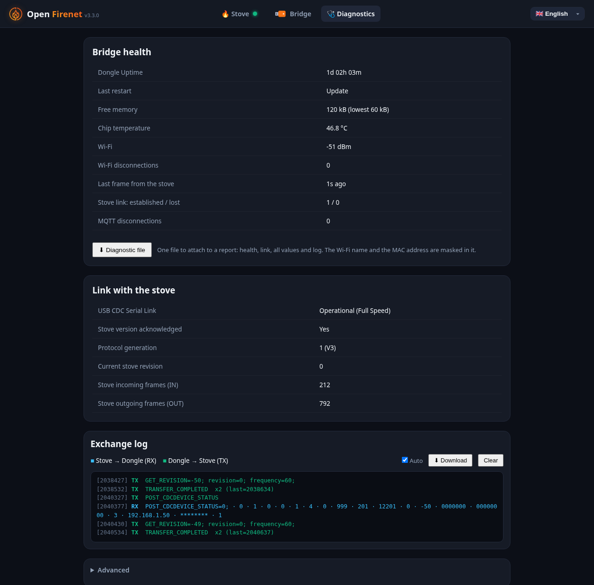

Troubleshooting
Start with the bridge's own page at http://open-firenet.local: since version 3.2 it tells you why there is no link with the stove.
The stove is not connected
Banner: "The bridge is not connected to the stove over USB"
The stove does not see the bridge at all. Check, in this order:
- The USB port on the board. On boards with two USB ports, the stove must be on the one labelled "USB" or "USB OTG", not "UART" or "COM".
- The cable. It must carry data. Many short cables only carry power.
- The stove. It must be powered: its USB socket powers the board.
Banner: "The stove does not answer"
The stove sees the bridge but has not sent anything. Switch the stove off at the mains for a minute, then on again, and wait two minutes. If nothing changes, download the log (Diagnostics tab) and report it.
The stove restarts when the bridge is plugged in
The board probably draws too much current from the stove's USB socket when it starts. It is uncommon; it was seen with a stick that has a screen. Put a USB extension cable between the stove and the board: see Hardware.
The stove screen shows a code UW29 (or another UW code)
UW codes come from the stove's check of the stick. UW29 means the stove did not get a valid identification from the stick in time. Make sure the bridge runs the latest firmware: versions 3.0.0 and 3.1.0 could not link with stoves on firmware 2.28. If it persists on the latest version, report it with the log.
The page says "Waiting for the stove" and the values are greyed out
The bridge has not received any data from the stove yet. Right after power-up this is normal for a few seconds. If it stays, read the banner above it.
The page cannot be reached
http://open-firenet.local does not open
- Some networks and Android phones do not resolve
.localnames. Use the IP address instead: the installer's Network Scan tab shows it, and so does your router. - Your device must be on the same network as the bridge.
The bridge is not on my network any more
When it cannot join your Wi-Fi, the bridge goes back to setup mode and creates the network Open-Firenet-Setup. Join it and enter your Wi-Fi again. Only 2.4 GHz networks are supported.
Updates
The wireless update times out
A wireless update needs the computer and the bridge to reach each other both ways: the installer sends an invitation to the bridge (UDP port 3232), then the bridge connects back to the computer to download the firmware. On networks with separate segments (VLANs, guest Wi-Fi) or with a firewall on the computer, this is blocked.
- Put the computer on the same network as the bridge, or
- allow incoming connections from the local network in the computer's firewall, or
- update over USB instead.
The firmware is too large for a wireless update
A bridge first flashed from the Arduino IDE with the default partition scheme has update slots of 1,310,720 bytes. Firmware 3.5.0 and later is larger than that: the bridge refuses the update without a word and the installer times out. Installer 1.6.0 names this cause, and refuses at once when the bridge runs firmware 3.6.0 or later.
- Flash the bridge once over USB with the installer. This rewrites the partition table, and wireless updates work again afterwards. You will have to enter your Wi-Fi again.
- If you build from source in the Arduino IDE, select Tools > Partition Scheme > "Minimal SPIFFS (1.9MB APP with OTA)".
A bridge flashed with the installer is not concerned.
The version did not change after an update
Check the version next to the title on the bridge's page. With a weak Wi-Fi signal an update can fail silently; update over USB with the installer.
Values
The room temperature shows "--"
Your stove has no RIKA room sensor. In Home Assistant you can display another sensor on the thermostat, see Home Assistant.
The air flaps value looks ten times smaller than on the stove screen
The stove screen shows the air flaps in per mille (‰), the bridge in percent: 50 ‰ on the screen is 5 % on the page.
The Diagnostics tab
The Diagnostics tab of the bridge's page (http://open-firenet.local/#diagnostics) gathers what is needed to understand a link problem: the state of the link with the stove, the log of the exchanges with its download button, and every value the stove reports.

MQTT
The MQTT badge says "Refused: wrong user or password"
The broker rejected the bridge. Enter the password again in the Bridge tab and save: the field is empty by design, and shows "Unchanged" once a password is stored.
The MQTT badge says "Broker unreachable"
Check the broker address and port (1883 by default), and that the broker accepts connections from your network. The bridge retries every 10 seconds; the link with the stove is not affected.
The MQTT badge says "Certificate not trusted"
TLS is on, and the bridge refuses the broker's certificate. If your broker has a self-made certificate, paste the certificate of the authority that signed it in the MQTT card: see MQTT, encrypted connection. Without it, only certificates signed by a public authority, for the name entered as broker address, are accepted.
The MQTT badge says "Secure connection failed"
The TLS dialogue with the broker failed before the certificate was even checked. The usual cause is TLS ticked on the broker's plain port: TLS is normally on port 8883, plain MQTT on 1883.
The stove appears twice in Home Assistant
The Open Firenet integration and MQTT discovery are both active. Keep one: untick "Home Assistant discovery" in the MQTT card of the Bridge tab (its entities are then removed), or remove the integration.
I ticked "Home Assistant discovery" and nothing appears
Check that "Enable MQTT" is ticked too and that the badge says "Connected", and that Home Assistant's own MQTT integration is set up on the same broker.
A command sent over MQTT is ignored
Commands are ignored while the stove is not linked, and when they are published with the retain flag. See MQTT.
Report a problem
Open an issue with:
- the stove model and its firmware version (Info menu of the stove);
- the bridge firmware version (next to the title on its page);
- the log: Diagnostics tab, "Download" in the exchange log, taken one to two minutes after switching the stove on (on firmware 3.2 and older: CDC Logs tab);
- the output of
http://open-firenet.local/api/state; - what the stove screen shows, with any code.
The log hides your Wi-Fi password. The state output contains your network name and the bridge's addresses: remove them if you prefer.